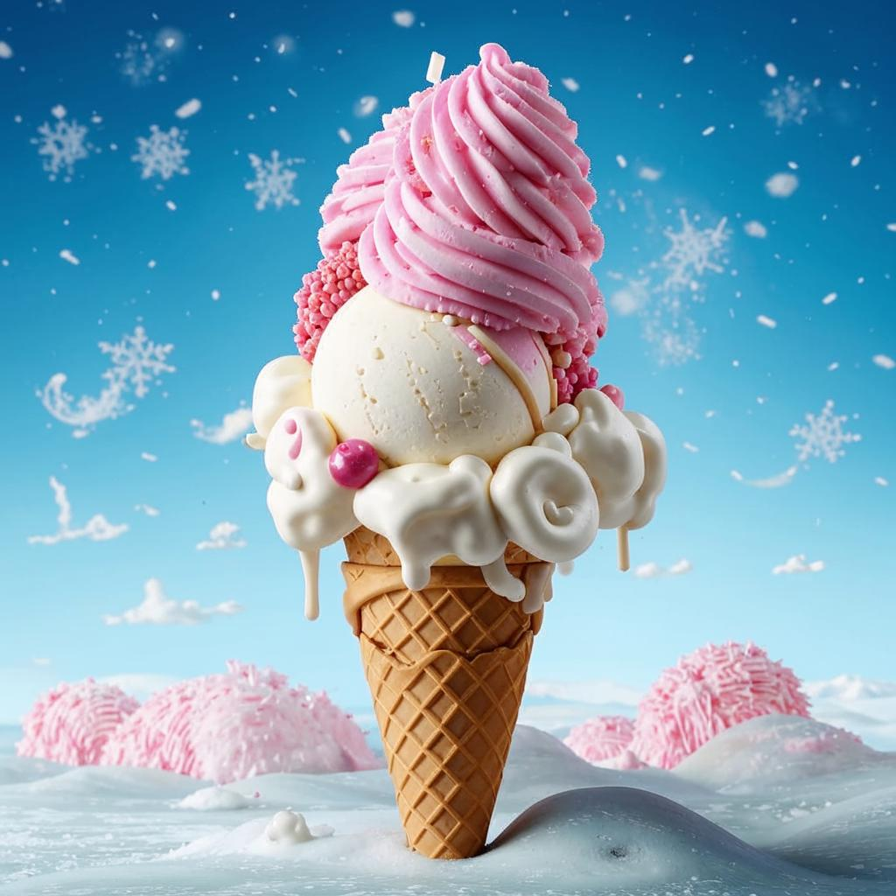

Снежная симфония — это воплощение зимней свежести и чистоты в каждом лакомом кусочке. Это мороженое, словно первый снег, легкое и воздушное, приносит ощущение праздника и волшебства. Каждая порция мороженого "Снежная симфония" обещает нежное сливочное наслаждение с легкими кокосовыми нотками и изысканным послевкусием белого шоколада. Ванильный аромат усиливает вкусовую гамму, делая ее богатой и многогранной. 
Упаковка мороженого выполнена в белоснежных тонах с серебристыми
акцентами, напоминая о зимнем волшебстве и новогоднем уюте. Открыв ее,
вы словно окунетесь в сказочный мир, где каждый день — это праздник.
Снежная симфония — это не просто десерт, это приглашение к встрече с
зимней сказкой, где каждый момент наполнен радостью и ожиданием чуда.
Позвольте себе отдохнуть от суеты и насладиться мгновением чистой
радости и гармонии.
В блендере пюрируйте каждый вид фруктов отдельно с добавлением
небольшого количества сахарной пудры и лимонного сока до получения
однородного пюре.
Взбейте сливки до образования пышной пены, постепенно добавляя
оставшуюся сахарную пудру.
Аккуратно соедините взбитые сливки с фруктовыми пюре, перемешивая
лопаткой до однородности.
Возьмите формы для мороженого и выложите в них слоями фруктовое пюре,
создавая красочные узоры.
Поставьте формы в морозильник минимум на 5 часов или до полного
замерзания.
Перед подачей можете украсить мороженое свежими фруктами или мятой для
дополнительного аромата.